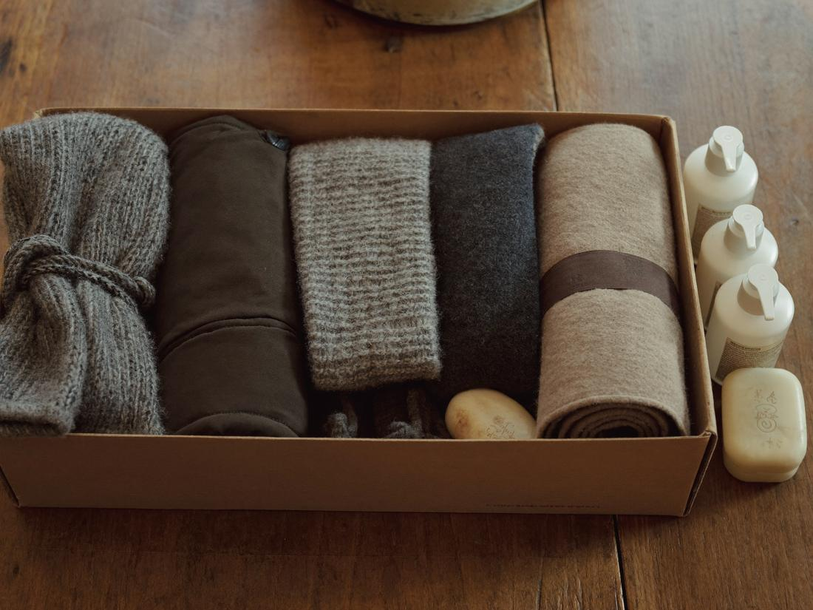

Manteaux, tuques, gants, bottes, couvertures.
Conserves et denrées non périssables.
Savon, brosses à dents, produits de soin, produits d'hygiène féminine.
Trousses, articles de première nécessité, maquillage.
Tentes, réchauds, sacs de couchage et tout matériel qui aide à passer la nuit dehors.
Déposez vos dons directement dans l'un de ces commerces partenaires.
Pour un dépôt spécial ou une collecte, écrivez-nous.
Pour organiser un dépôt, une collecte en entreprise, ou poser une question.